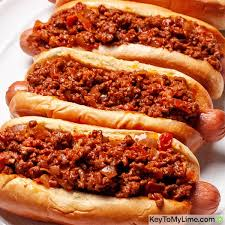

Hot Dog Chili

Yummy Hot Dog Chili
Delicious home made hot dog chili perfect for backyard cookouts!
Ingredients
- 1 large onion, chopped
- 1/4 green bell pepper, seeded and chopped
- 3 pounds ground beef
- 1 tablespoon brown sugar
- 1/4 teaspoon paprika
- 2 tablespoons lemon juice or vinegar
- 1 can (15 ounce size) tomato sauce
- 1 cup ketchup or chili sauce
- 4 tablespoons Worcestershire sauce
- 1 tablespoon chili powder
- 1 teaspoon hot sauce
- 1 teaspoon salt
- 1/4 teaspoon black pepper
- 2 tablespoons mustard seed
Steps
- Combine the onion, bell pepper, and ground beef in a 3-quart saucepan or skillet over medium-high heat.
Cook, stirring frequently, until the beef is cooked. Drain off excess grease.
- Add the remaining ingredients, stir well and bring to a boil. Reduce the heat to a simmer and let cook for 45-60 minutes, stirring occasionally.
- Serve over hot dogs in buns.